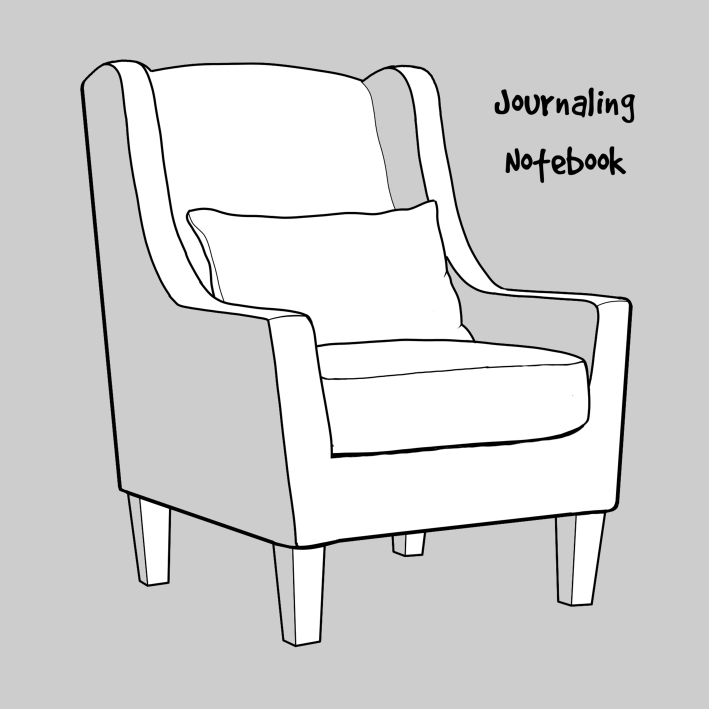

Digital ink, comics and code
Ένα σημειωματάριο αναστοχασμού (Journaling Notebook) έχει σκοπό να συγκεντρώσει τις σκέψεις του συντάκτη, να τον βοηθήσει να αναπτύξει τις ιδέες του και να αναστοχαστεί δηλαδή να κάνει αποδοτική σύνθεση και αξιολόγηση των σκέψεων αυτών ως καθημερινή (ή σχεδόν καθημερινή) ενασχόληση. Χρειάζεται να είναι πολύπλευρο και ελαστικό καθώς καλείται να συγκεντρώσει κείμενα, σχέδια, φωτογραφίες και ηχητικά μηνύματα αλλά και απλό στη χρήση αφού όλα αυτά θα πρέπει να μπορούν να ομαδοποιηθούν ανά θέμα (ή με οποιοδήποτε άλλο τρόπο) και να λειτουργήσουν σε επόμενο στάδιο ως παραπομπές σε παραγόμενα του ίδιου. Ένα σημειωματάριο αναστοχασμού περιέχει λοιπόν τα εξής :
Υπάρχουν πολλά εργαλεία ειδικά σχεδιασμένα για αυτό το σκοπό. Άς δούμε ένα Journaling Notebook με χρήση της πλατφόρμα του Google Workspace συνδυάζοντας τα εργαλεία : Google Keep και Google Calendar / Google Drive /GMail με ενεργή χρήση του Tasks και όλα αυτά υπό την ‘ομπρέλα’ ενός Google Site με το αντίστοιχο όνομα : Journaling Notebook.
‘Εργασίες’ καταχωρούνται σε checklist ή notes στο Google Keep τα οποία μπορείς να χρονοπρογραμματίσεις, προσθέτοντας μια ημερομηνία εκτέλεσης. Οι προγραμματισμένες εργασίες είναι ταυτόχρονα προσβάσιμες και από το Google Calendar στο ανάλογο ημερολόγιο.
'Εργασίες' επίσης καταχωρούνται στην μικροεφαρμογή Tasks που είναι διαθέσιμη στο GMail, στις εφαρμογές του Google Drive και το ίδιο το Google Calendar. Τις χρονοπρογραμματίζεις εύκολα, προσθέτοντας ημερομηνία εκτέλεσης οπότε και είναι προσβάσιμες και από το Google Calendar στο ανάλογο ημερολόγιο.
Επιλέγεις το κατάλληλο tag και ομαδοποιείς τις ‘ιδέες’ σου στο Google Keep. Όταν αυτές χρειαστούν χώρο για να αναπτυχθούν τότε τα tag γίνονται φάκελοι Google Drive και τα notes γίνονται Google Docs, Slides, Sheets ή Google Sites.
Η καταγραφή σε χρονολογική σειρά των γεγονότων και ο αναστοχασμός επί των αξιοσημείωτων στιγμών είναι ο πυρήνας πάνω στον οποίο βασίζεται το Journaling. Αυτό μπορεί να γίνει αποδοτικά σε ένα Google Doc με το ανάλογο όνομα : Journaling.
Επιλέγεις το κατάλληλο tag και καταγράφεις την ‘έμπνευση’ σου στο Google Keep. Όταν αυτή χρειαστεί χώρο για να αναπτυχθεί τότε τα tag γίνονται φάκελοι Google Drive και τα notes γίνονται Google Docs, Slides, Sheets ή Google Sites.
Κάθε ‘στόχος’ έχει τη δική του υποσελίδα στο Google Site του Journaling Notebook. Ταυτόχρονα έχει την δική του ομάδα tag στο Google Keep και το δικό του φάκελο στο Google Drive ώστε να φιλοξενεί τα σχετικά αρχεία (Docs, Slides, Sheets, Drawings και λοιπά).
Τα μέρη αυτά ανάλογα την σημασία τους, έχουν σχετικό σύνδεσμο είτε σε tag του Google Keep είτε σε υποσελίδα του ‘στόχου’ με τον οποίο σχετίζονται στο Google Site του Journaling Notebook.
Αφού γνωρίσαμε αναλυτικά τα συστατικά, ας δούμε μια συνταγή Journaling Notebook στα γρήγορα :
Στο Google Keep ξεχωρίζουμε ‘ιδέες’, ‘έμπνευση’, ΄στόχους’ και ’σελιδοδείκτες’ ορίζοντας τους το ανάλογο χρώμα. Παράλληλα στήνουμε θεματικά tag ώστε να υπάρχει η ανάλογη ομαδοποίηση ενώ παράλληλα δημιουργούμε και φακέλους στο Google Drive με τους ‘στόχους’ ώστε να δημιουργηθούν εκεί τα Πρωτότυπα δικά μας αρχεία και να περάσουμε όποια notes από το Keep χρειάζεται.
Στο Tasks και στο Keep ορίζουμε τις εργασίες, τις οποίες αν χρονοπρογραμματίσουμε μπορούμε να παρακολουθούμε στο Google Calendar.
Κάποια από τα παραπάνω καταγράφονται εφόσον τα θεωρούμε αξιοσημείωτα ως ‘γεγονότα’ στο Journaling (Google Doc).
Όλα τα παραπάνω συνδέονται στο Journaling Notebook (Google Site) με συνδέσμους σε Google Keep, Google Calendar, το Journaling (Google Doc) και με υποσελίδες τους ‘στόχους’ οι οποίες ενσωματώνουν τους σχετικούς φακέλους Google Drive και του σχετικούς ‘Σελιδοδείκτες’.